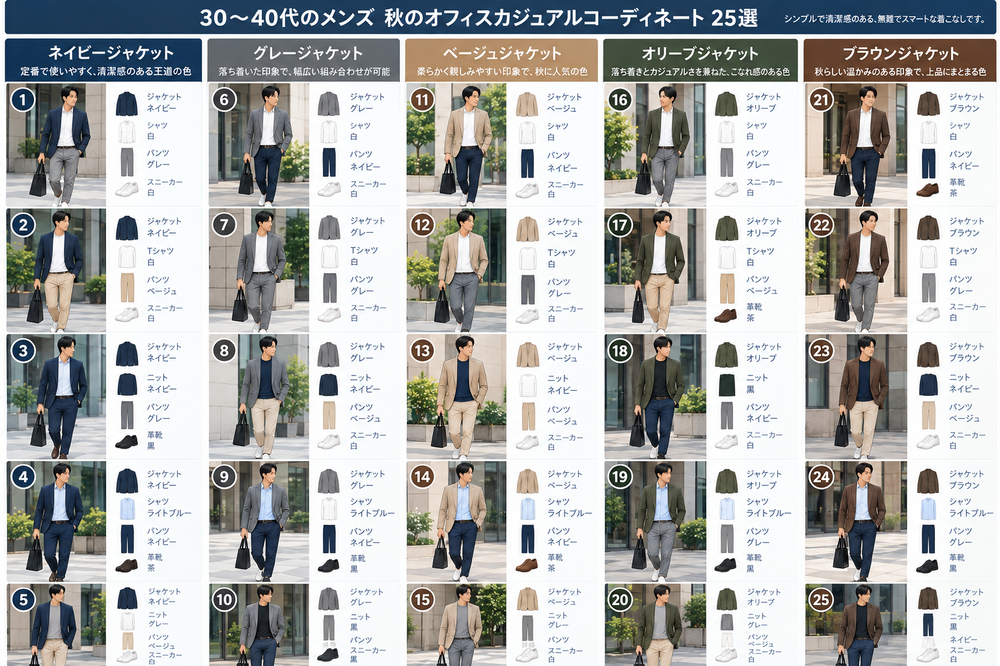

毎日の服選びに迷わない、25のコーディネート
「おしゃれに詳しくないけれど、仕事の場に合う服装をしたい」 そんな男性に向けて、ベーシックな色とアイテムを中心に、 取り入れやすい秋のオフィスカジュアルを紹介します。
秋のオフィスカジュアル 25選
ジャケットの色別に、シャツ・ニット・パンツ・靴の組み合わせをまとめました。

スマートフォンでは、画像を左右にスクロールしてご覧いただけます。
このサイトについて
高価なブランドや難しい着こなしではなく、身近なお店でも揃えやすい、 清潔感のあるベーシックなコーディネートを提案していきます。